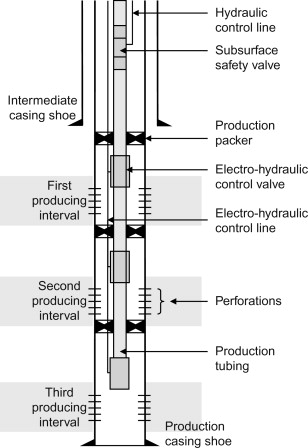

Production Well
1. Introduction
A production well is a drilled and completed well used for extracting hydrocarbons (oil or gas) or other resources such as water, geothermal energy, or CO₂ storage. The performance of a production well is critical for optimizing recovery and ensuring economic viability.
2. Well Design and Components
- Casing and Tubing: Provides structural integrity and a controlled pathway for fluid flow.
- Completion System: Includes perforations, packers, and valves to regulate production.
- Artificial Lift (if required): Used when natural reservoir pressure is insufficient for fluid flow.
- Surface Facilities: Includes wellheads, separators, and pipelines for fluid processing and transportation.

3. Reservoir and Production Parameters
- Reservoir Pressure: Determines the drive mechanism and production potential.
- Permeability and Porosity: Influence fluid movement through the reservoir.
- Flow Rate: Measured in barrels per day (bpd) for oil or standard cubic feet per day (SCFD) for gas.
- Water Cut: Indicates the percentage of water in the produced fluid.
- Gas-to-Oil Ratio (GOR): Determines the gas content in the produced hydrocarbons.
4. Production Optimization Techniques
- Reservoir Management: Monitoring pressure and fluid characteristics to maintain optimal production.
- Artificial Lift Techniques: Includes gas lift, electric submersible pumps (ESP), and sucker rod pumps.
- Enhanced Oil Recovery (EOR): Includes CO₂ injection, water flooding, and chemical injection.
- Well Stimulation: Techniques like hydraulic fracturing or acidizing to improve permeability.
5. Challenges in Production Wells
- Reservoir Depletion: Leads to declining production over time.
- Water and Sand Production: Can cause wellbore damage and reduce efficiency.
- Scale and Corrosion: Affects well integrity and production equipment.
- Wellbore Damage: Due to formation fines migration or blockage.
6. Conclusion
A well-designed and efficiently operated production well is essential for maximizing hydrocarbon recovery and ensuring economic feasibility. Regular monitoring, advanced technologies, and reservoir management strategies help maintain optimal production and extend well life.